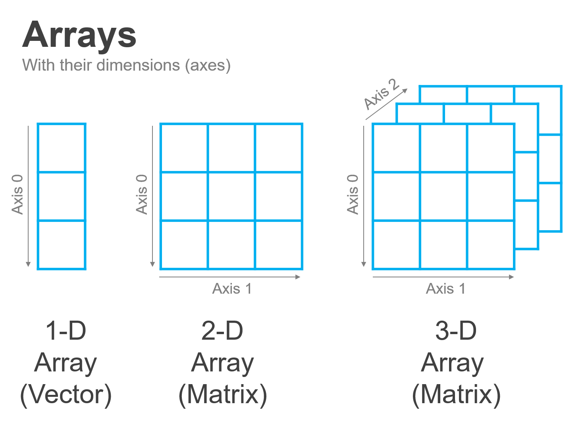

Working with Vectors¶
Why Should I Care?¶
The year is 2028, and you have just been approached by the newly elected President of the United States. She hands you a flash drive and says:
“On this drive is data from the U.S. Census Bureau of the total incomes of over one million households from last year. As you know for my campaign, I am deeply concerned about income inequality, and so I would like you to use this data to answer several questions for me:
What is the average income of US households?
How many households are currently living below the Federal poverty line of $28,000?
Of those households, what share are near the poverty line (say, earning more than $20,000), and how many are in extreme poverty (below $20,000)?
If I provided a tax credit of $10,000 to those making less than $10,000, what impact would that have on income inequality?”
What would you do? Using some of the tools we’ve learned about previously—like lists—you could maybe load that data and do some simple calculations (like getting the average income of households), but how might you do these more complicated analyses?
With numpy of course! As we will see in the following several readings, these types of questions—in which we seek to characterize various properties of a collection of individual measurements of income—are precisely what numpy was designed to answer. Indeed, later this week you will be provided with real US household income data from the US Census Bureau and you’ll be able to conduct analyses to answer these exact types of questions!
(And don’t worry if income inequality isn’t a topic that you care about—these same skills are relevant to lots of business questions, income inequality is just a fun illustrative example. Feel free to also imagine you’re starting a business and want to use this income data to estimate the number of households that have the right income to be potential customers for your business!)
Vectors in Context¶
In this reading, we’ll begin our introduction to numpy with the most basic form of numpy array: the vector! We’ll start by helping to contextualize and explain why we use vectors, then we’ll talk about how to create a vector and use it to do mathematical operations.
As we mentioned in our last reading, the fundamental workhorse of data science in python is the numpy array. While all numpy arrays are similar, they do come in a range of flavors depending on the number of dimensions along which they organize the data they contain:
The simplest form of the numpy array is a one-dimensional array, also known as a vector. Vectors are a building block of data science because they are often used to represent a collection of different measurements or observations of the same thing. For example, one may use a vector to hold the heights of everyone in a classroom, or a series of measurements of one’s heart rate taken over time.
When we move from one dimension to two, the resulting array is also known as a matrix. Matrices (the plural of matrix) are commonly used to represent data in two different ways.
The first way we can represent data in a matrix is by placing lots of vectors side by side so that each column becomes a different property being measured, and each row becomes a single entity whose properties are being measured. For example, you could imagine storing data about customers in a matrix, where each row is a different individual customer, and each column is a different type of data being collected (days since customer’s last purchase, total dollars customer has spent at a store, customer age, etc.).
The second common way of representing data in a matrix is by using the matrix to represent fundamentally two-dimensional data, like a picture. A simple black and white image, for example, can be represented by a matrix where the value in each cell is the darkness of the corresponding pixel, and a color image can be created by combining multiple matrices—one matrix for the amount of blue in each pixel, one for the amount of red, and one for the amount of green.
While vectors and matrices are probably the most used types of arrays in data science, arrays can be extended into as many dimensions as one wants! For example, we could represent that color image we just described not with three matrices, but with one three-dimensional array composed of the three stacked matrices. Or we might also want to work with a three-dimensional array to represent three-dimensional data, like the results of an MRI scan of a brain with MRI signal strength in each cell, or a climate model with temperatures at a given location and altitude in each cell. Indeed, even higher dimensional arrays are commonly used, even if they’re harder to visualize—for example, if we wanted to model how a three-dimensional climate model changes over time, we could think of that as a series of three-dimensional arrays (each representing the world at a given time) stacked along a fourth dimension (time)!
Vectors¶
All the flexibility that makes arrays so powerful can also be really overwhelming, so while it’s helpful for you to know a little about why arrays are so powerful, we’ll start our lesson by just getting a firm grasp on how to work with the simplest form of arrays—the vector.
Then, once we feel really comfortable with vectors, we’ll talk about how everything you’ve learned about manipulating vectors can be easily generalized to these higher-dimensional arrays. Because as we’ll see, the real magic of arrays isn’t that they come in so many flavors—it’s that arrays follow the same logic whether they’re simple one-dimensional vectors or 10-dimensional tensors.
Creating a Vector¶
Vectors are one-dimensional arrays, which means they have two key properties: first, they organize all their data in a line along one dimension (like the lists you saw in your previous readings), and second, they are homogeneously typed, meaning each vector only holds data of one type (integer, floating point number, etc.).
The simplest way to create a vector is with the np.array() function and a list:
[1]:
import numpy as np
# A vector of ints
an_integer_vector = np.array([1, 2, 3])
an_integer_vector
[1]:
array([1, 2, 3])
When you create a vector this way, numpy will do its best to infer the type of data you want the vector to store based on the data you provided it. You can see what it guessed by checking the .dtype attribute of your array:
[2]:
an_integer_vector.dtype
[2]:
dtype('int64')
We’ll talk more about numpy data types, but for now it’s sufficient to know that int64 is a kind of integer. So in this case, you passed np.array() a list of three integers, so it chose to create an array of integers!
Vectors aren’t limited to integers, or course – we can also create vectors of floating point numbers (numbers with decimal components), Booleans, or strings!
[3]:
# A vector of floats
a_float_vector = np.array([1.7, 2, 3.14])
a_float_vector
[3]:
array([1.7 , 2. , 3.14])
[4]:
a_float_vector.dtype
[4]:
dtype('float64')
[5]:
# A vector of booleans
a_boolean_vector = np.array([True, False, True])
a_boolean_vector
a_boolean_vector.dtype
[5]:
dtype('bool')
[6]:
# A vector of strings
# (Note numpy is entirely happy with unicode
# characters like emojis or Chinese characters!)
a_string_vector = np.array(["Lassie", "盼盼", "Hachi", "Flipper", "🐄"])
a_string_vector
[6]:
array(['Lassie', '盼盼', 'Hachi', 'Flipper', '🐄'], dtype='<U7')
[7]:
# Data types for strings look especially strange --
# we'll talk about that below! Here, the U7 means
# this is storing Unicode strings of length 7,
# (but it won't hold any that are longer!).
# Don't worry if that doesn't mean anything to you.
a_string_vector.dtype
[7]:
dtype('<U7')
Of course, vectors wouldn’t be useful if we had to create a list and pass it to np.array anytime we wanted an array, so there are two other primary ways to get arrays.
First, we can read in data from a file. In reality, this will probably be the method you use most for getting data in your career, though we won’t really get into reading in data from files till a later lesson.
Second, we can use any one of a number of helper functions designed to generate especially helpful arrays. For example:
[8]:
# Numbers from 0 to 9
np.arange(10)
[8]:
array([0, 1, 2, 3, 4, 5, 6, 7, 8, 9])
[9]:
# Ones
np.ones(3)
[9]:
array([1., 1., 1.])
[10]:
# Zeros
np.zeros(3)
[10]:
array([0., 0., 0.])
[11]:
# An array of random values
# distributed uniformally between 0 and 1
np.random.rand(3)
[11]:
array([0.81257636, 0.2234691 , 0.75118362])
Numpy Data Types¶
As we saw above, the way numpy writes out data types looks a little different from what we’ve previously seen from Python. For example, in Python the number 1 is just an int:
[12]:
type(1)
[12]:
int
And a floating point number like 3.14 is a float:
[13]:
type(3.14)
[13]:
float
In numpy, by contrast, we also see these trailing numbers (e.g. int64 and float64). Those trailing numbers just indicate the number of bits (individual 1s and 0s) that numpy is using to store each integer or floating point number. On any modern computer, numpy will default to 64 bits. This is a complexity you really don’t need to worry about for now, but basically, it’s there because you can tell numpy to allocate fewer bits to storing numbers if you want your data to take up less memory and you’re ok with the trade-offs that come with allocating fewer bits to storing a number (e.g. if you move from float64 to float16, numpy will start ignoring many of the trailing digits of very long numbers).
If at any point you want to control the type of your array (instead of having numpy guess), you can pass an argument to the dtype keyword when using np.array(). For example, if I want to make sure my array is an array of floats even if the data I’m putting in could be treated as integers, I could type:
[14]:
as_a_float = np.array([1, 2], dtype="float")
as_a_float
[14]:
array([1., 2.])
[15]:
as_a_float.dtype
[15]:
dtype('float64')
We’ll talk more about when you might want to do that in a later reading.
(Also, note I didn’t have to say float64 – if you don’t give a number when specifying a type, numpy will just use it’s own default, which is usually 64.)
Exercises¶
Create a vector with all the prime numbers between 0 and 10 (e.g., just type the prime numbers in a vector).
Use
len()to get the number of numbers you put into your vector.Access the
.sizeattribute to get the same number (just a different way!)What do you think is the
dtypeof vector? Answer without running any code.Now access the
.dtypeattribute – were you correct?